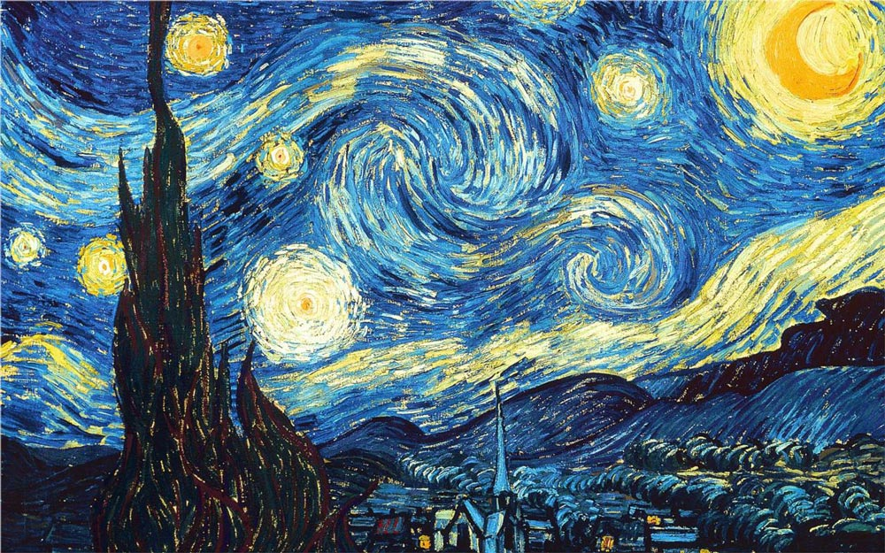
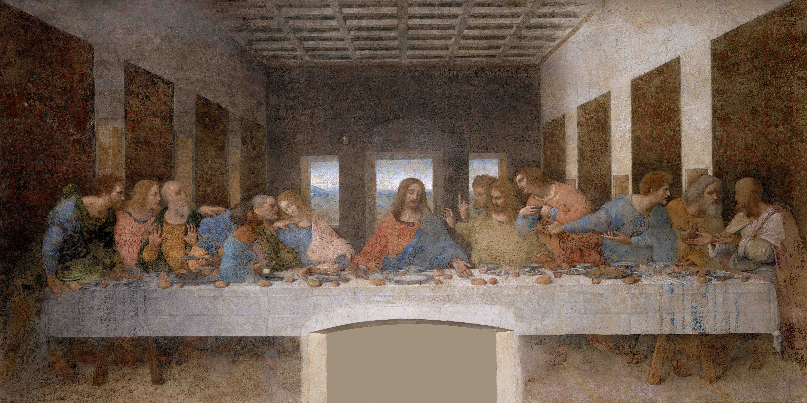
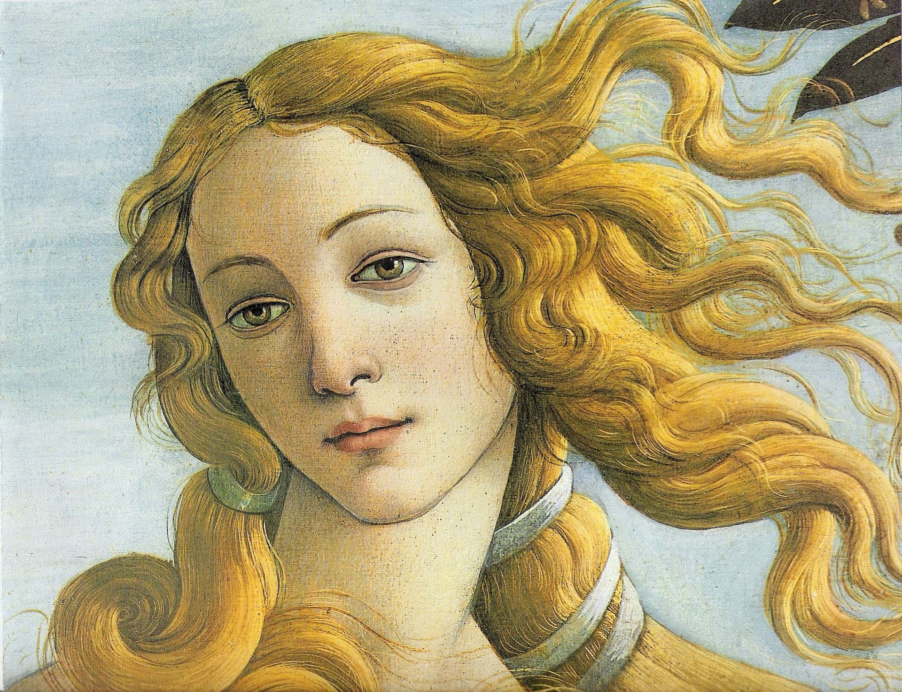

SOME FAMOUS ARTWORKS:
1:Mona Lisa – Leonardo da Vinci (1503–1519)
.jpg)
Perhaps the most iconic painting in the world, admired for its mysterious smile and masterful technique.
2:The Starry Night – Vincent van Gogh (1889)

A swirling, dreamlike night sky that captures emotion and imagination, one of Van Gogh’s masterpieces.
3:The Last Supper – Leonardo da Vinci (1495–1498)

A monumental fresco depicting Jesus and his disciples, renowned for its composition and symbolism.
4:The Persistence of Memory – Salvador Dalí (1931)

Famous for its melting clocks, this surrealist painting explores time, reality, and the subconscious.
5:The Birth of Venus – Sandro Botticelli (1484–1486)

A Renaissance masterpiece symbolizing beauty and mythology, depicting Venus emerging from the sea.
Types of Artworks:
- Digital Paintings: Art created using digital tools and software, often mimicking traditional painting techniques.
- 3D Art: Artworks that utilize three-dimensional modeling and rendering to create immersive visual experiences.
- Interactive Installations: Art pieces that engage viewers through interaction, often incorporating technology to respond to user input.
- Virtual Reality Experiences: Immersive environments that allow users to explore and interact with art in a virtual space using VR headsets.
- Augmented Reality Art: Art that overlays digital elements onto the real world through devices like smartphones or AR glasses.
- Generative Art: Art created using algorithms and computational processes, often resulting in unique and evolving pieces.
- Mixed Media: Artworks that combine various digital and traditional media to create complex and layered compositions.
SOME FAMOUS ARTISTS:
- Beeple (Mike Winkelmann)
- Refik Anadol
- Pak
- Mad Dog Jones (Michah Dowbak)
- Krista Kim
- Joshua Davis
- Sougwen Chung
- Casey Reas
- Rafaël Rozendaal
- Mario Klingemann
ABOUT US
At Miraqle, we believe that art is more than just visuals—it’s an experience, a story, and a spark of imagination that transcends boundaries. Our digital gallery is a space where creativity finds a limitless canvas, showcasing unique artworks from visionary artists around the globe.
We curate and present art that inspires, challenges perspectives, and brings the extraordinary closer to you. Whether you’re an art enthusiast, a collector, or simply someone seeking inspiration, Miraqle is your destination to explore the magical blend of innovation and artistry.
Here, every piece is not just art—it’s a Miraqle waiting to be discovered.
FAMOUS ARTWORKS
| Artwork Title |
Artist |
Year |
Medium |
Description |
| Mona Lisa |
Leonardo da Vinci |
1503-1519 |
Oil on poplar panel |
Perhaps the most iconic painting in the world, admired for its mysterious smile and masterful technique. |
| The Starry Night |
Vincent van Gogh |
1889 |
Oil on canvas |
A swirling, dreamlike night sky that captures emotion and imagination, one of Van Gogh’s masterpieces. |
| The Last Supper |
Leonardo da Vinci |
1495-1498 |
Tempera on gesso, pitch, and mastic |
A monumental fresco depicting Jesus and his disciples, renowned for its composition and symbolism. |
| The Persistence of Memory |
Salvador Dalí |
1931 |
Oil on canvas |
Famous for its melting clocks, this surrealist painting explores time, reality, and the subconscious. |
| The Birth of Venus |
Sandro Botticelli |
1484-1486 |
Tempera on canvas |
A masterpiece of the Italian Renaissance, depicting the goddess Venus emerging from the sea on a shell. |